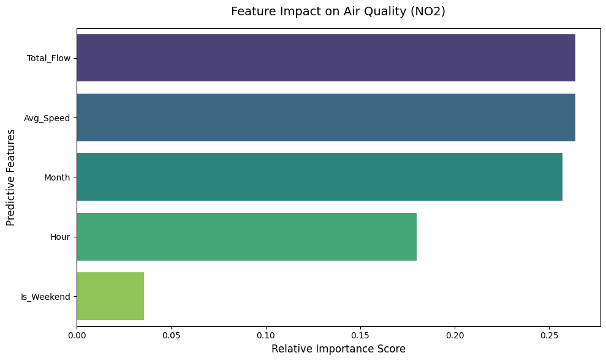
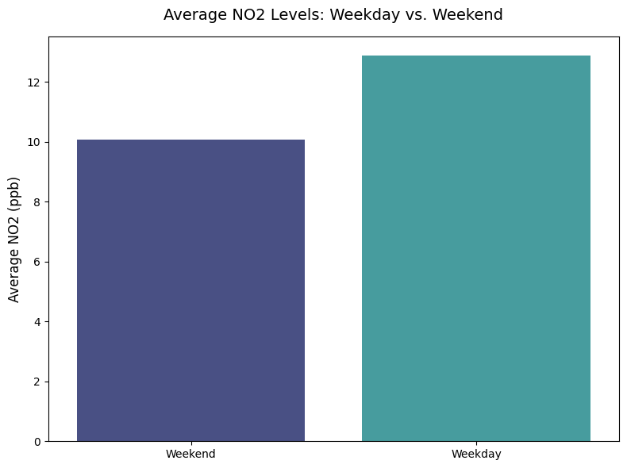
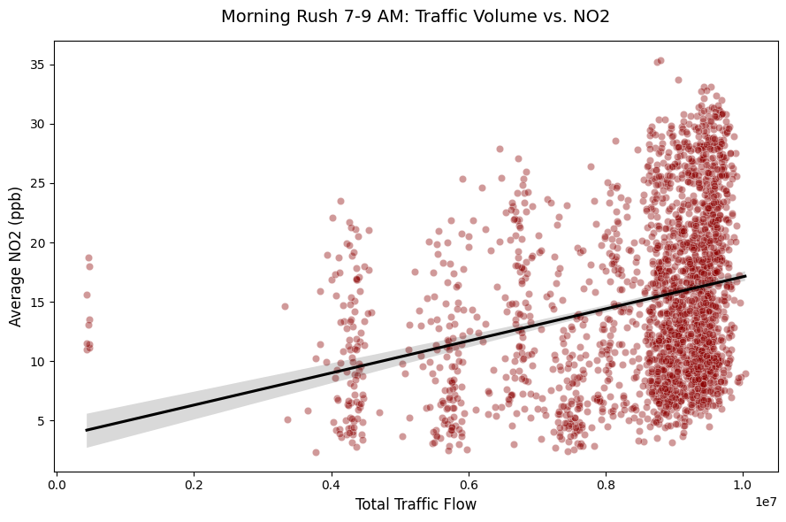

model two
Modeling whether hourly freeway traffic in Los Angeles and Ventura counties predicts NO₂ air pollution levels, comparing a Random Forest regressor against an LSTM time-series network.

Random Forest feature importance for predicting NO₂ — total traffic flow and average speed came out virtually tied as the strongest predictors, followed closely by month, then hour, with weekday/weekend mattering least.

Average NO₂ by day type — weekday levels run noticeably higher than weekend levels, consistent with the traffic-linked hypothesis.

Morning rush hour (7–9 AM) traffic volume vs. NO₂, with a fitted trend line — a clear positive relationship during peak commute hours.
Traffic congestion and air pollution are both persistent problems in large metro areas, and the two are often assumed to be linked. The team wanted to know whether hourly and daily patterns in freeway traffic volume actually correspond to changes in air quality across Los Angeles and Ventura counties, hypothesizing that higher traffic volume tracks with higher NO₂ and that weekdays run higher than weekends.
Merged hourly 2022–2023 freeway traffic data (Caltrans PeMS District 7 — total flow and average speed from roughly 1,900 mainline detectors) with EPA Air Quality System NO₂ readings for the same counties. Trained two models on the same features (traffic flow, average speed, weekend flag, hour, month): a Random Forest regressor to surface feature importance and non-linear relationships, and an LSTM time-series network to account for pollution lingering from one hour into the next.
Both models found a measurable relationship between traffic and NO₂. The Random Forest explained about 32% of NO₂ variation (R² = 0.32, RMSE = 5.84) using only traffic and time features. The LSTM improved on that with a lower RMSE (5.76), meaning treating pollution as a lingering, hour-to-hour process predicts better than treating each hour independently. Total traffic flow and average speed came out as the two strongest predictors — essentially tied — and weekday NO₂ ran higher than weekend NO₂, as hypothesized.
Next iterations would bring in weather variables the current model doesn't capture — wind speed, humidity, marine layer inversions — test whether the pattern holds outside Caltrans District 7, and extend the LSTM's sequence window to see how much further it can reduce error.